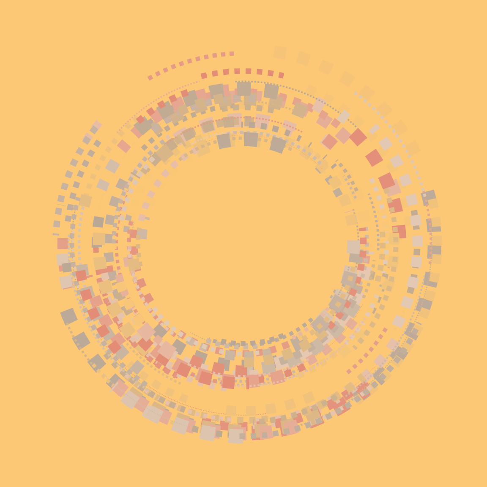
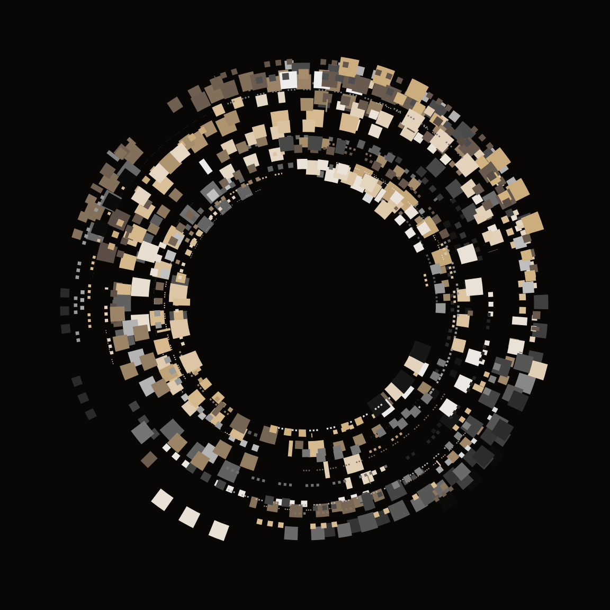
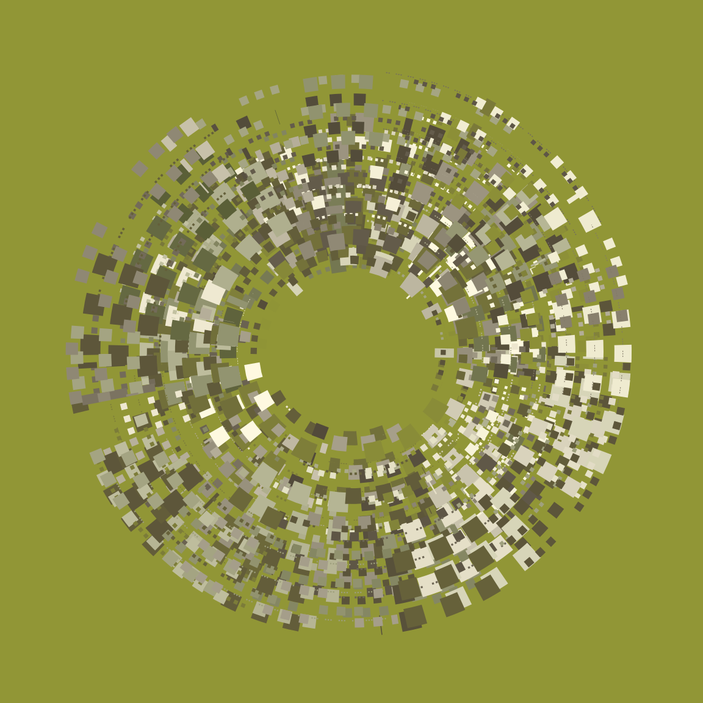
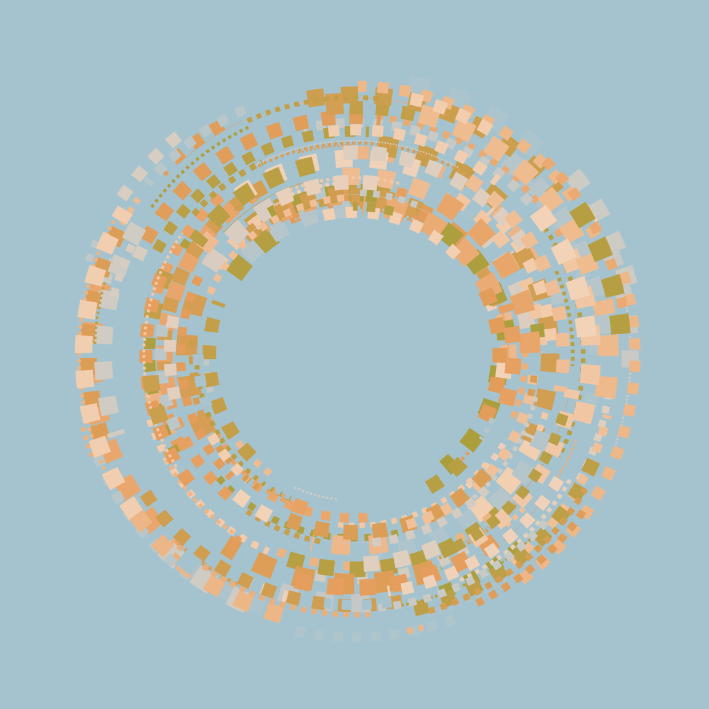
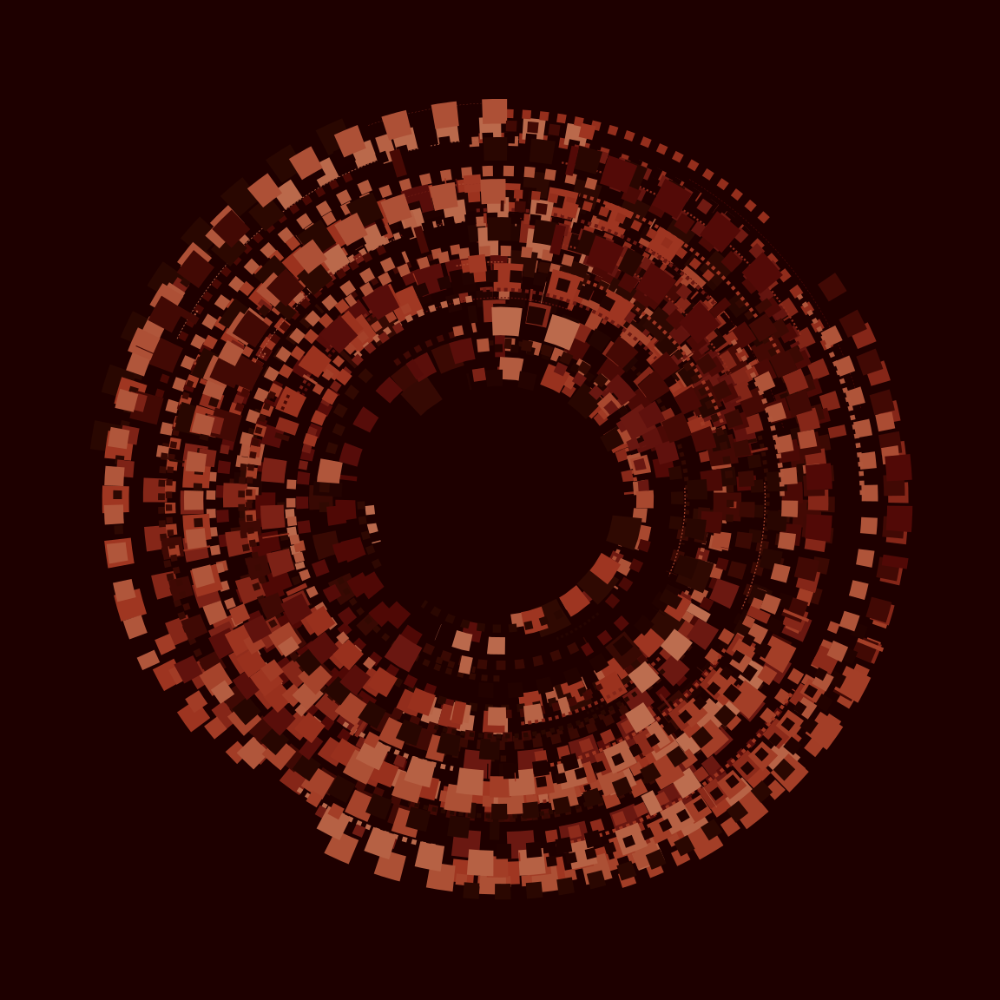
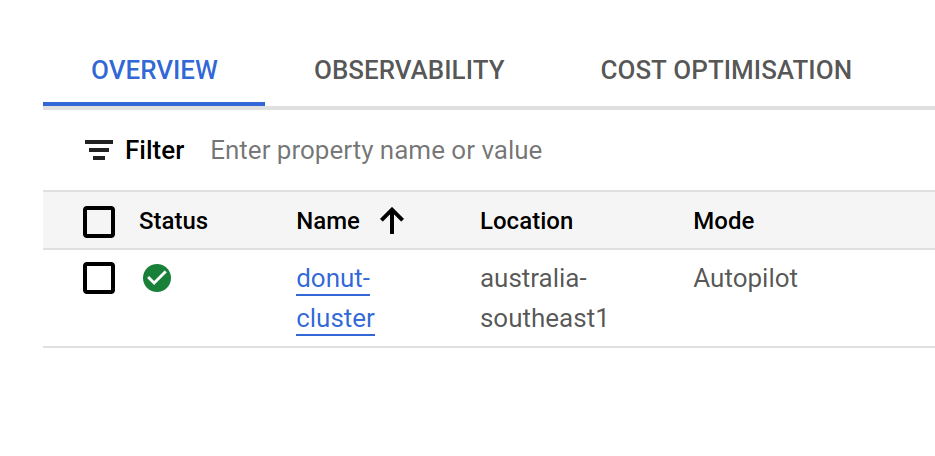
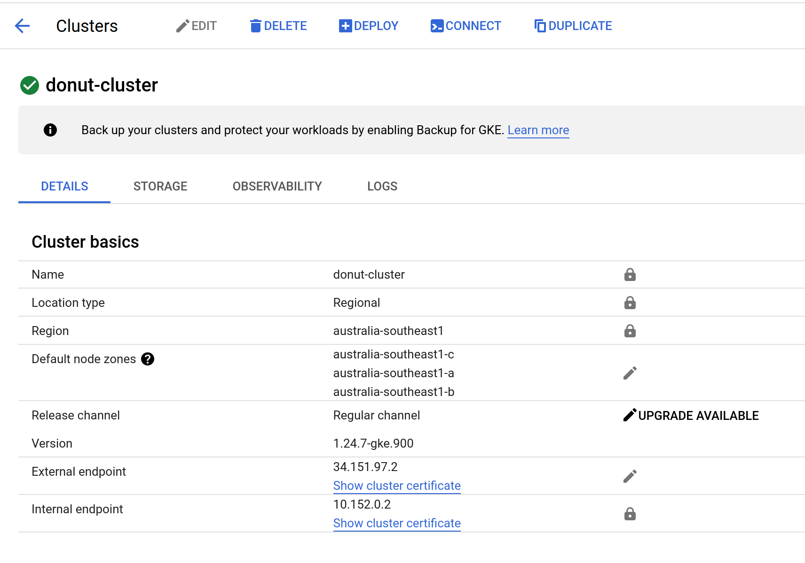

![]()
NOTE: The donuts app is no longer live. It was starting to cost me money! :-)
Me: ooh I made a kubernetes app
10yo: I made a paper dragon
Me: yeah… yours is cooler
– My daughter, reminding me that perspective is a thing
Story time. There was a very weird moment in machine learning history, about 20 years ago, when the probabilistic AI folks were completely obsessed with Bayesian nonparametrics, and a disproportionate number of papers at NeurIPS had titles like “[Cutesy prefix]: An infinite dimensional model of [something really boring]”. In most cases, you’d dig into the paper and discover that they hadn’t done anything very special. All they’d done is implement a Bayesian model of [boring thing] that was ambiguous about the number of [components], and instead of thinking about what prior constraints make sense for the problem they were trying to solve, the authors used a Chinese restaurant process (CRP) to specify the conditional prior distribution over allocations of observations to components. The CRP has the mildly-interesting property that for any finite sample size there is a non-negligible conditional probability that the next observation belongs to a hitherto unobserved component, and asymptotically the partitions over observations it generates have a countably infinite number of components. Alas, exactly zero of these papers happened to have an infinitely large data set to train the model on, and without fail the results in the papers didn’t appear to have anything “infinite dimensional” about them whatsoever.
I say this with love and gentleness, dear reader, because I wrote quite a few of those papers myself.
Why do I tell this story in a blog post that has absolutely nothing to do with machine learning, statistics, or Bayesian inference? Because in a fit of pique, somewhere around 2006, I decided to do the damned reading myself and learned quite a lot of Bayesian nonparametrics. Not because I thought it would be useful, but because I was curious and I was getting extremely irritated at overconfident machine learning boys telling me that as a mere psychologist I couldn’t possibly understand the depth of their thinking.
Which brings me, naturally enough, to kubernetes.
ggplot2 on kubernetes
Let’s start at the ending, shall we? The art shown below is generated at donut.djnavarro.net, and it is more-or-less unique. The site is designed to serve a different image every time it is accessed, using the timestamp as the seed to a generative art system written in R with ggplot2. If you refresh this page, the artwork will change:
Under the hood, the site is a kubernetes app running containerised R code with google kubernetes engine. Sounds fancy, right?
Well, maybe. Shall we take a look at how it works? Perhaps, like so many other things in this world, it will turn out not to be anywhere near as complicated as it is made out to be.
Um. What is kubernetes? Do I care?
There’s nothing I love more than looking at the website for a software tool and trying to work out what it does by reading how the developers have chosen to describe it. On the kubernetes website they’ve gone with the headline “Production-Grade Container Orchestration”, and started with this:
Kubernetes, also known as K8s, is an open-source system for automating deployment, scaling, and management of containerized applications.
As opening lines go it wouldn’t get you a lot of attention on grindr1 but context makes a difference and it’s not so terrible as a description of what kubernetes does. It’s a useful tool if you need to deploy an application on a cluster2 and have that application run smoothly as you “scale” your cluster by adding more “nodes”3 to the cluster. For the application I’m about to write, kubernetes is overkill. I don’t actually need kubernetes to run something this simple, but this is a learning exercise. I’m doing it so that I can familiarise myself with core concepts. When I get to the part of the post that actually does something with kubernetes I’ll start introducing terminology, but for now that’s enough for us.
Should you care as an R user? I mean, probably not. If you want a proper answer, Roel Hogervorst has an excellent blog post called “WTF is Kubernetes and Should I Care as R User?” I won’t duplicate content here: you should read the original post. But the short answer is that you probably won’t need to run your own application using kubernetes, but you might need to contribute code to a larger application that uses it. If so, you may want to play around with kubernetes to make sure you understand what it does.
Write the R code
Likes to watch me in the glass room, bathroom
Chateau Marmont, slippin’ on my red dress, puttin’ on my makeup
Glass room, perfume, cognac, lilac fumes
Says it feels like heaven to him
– Lana Del Rey4
Let’s begin at the beginning. Anytime you want to write something, it helps to have something to say. There is nothing more tiresome than an op-ed writer trying to fill out 1000 words to make the Saturday paper deadline, but tech writing that tries to demonstrate a tool5 without anything even remotely resembling an application runs a very close second. So let’s at least pretend we have a use case for this yeah?
In real life I am an unemployed 40-something woman who smokes and drinks too much and makes very poor choices around men, but in my spare moments I make generative art using R. It’s an extremely unprofitable hobby6 but it’s not completely without market value. Among other things the lovely folks at Posit were kind enough to pay me to put together an “art from code” workshop last year, and thanks to their kindness and my weird priorities there is now a nice little online tutorial that you can use to learn how to make generative art in R. What I’m going to do in this post is build a little kubernetes app that creates generative in R. It won’t be very fancy, but hopefully you can see how an app like this could be expanded7 to create a platform for “long form generative art” with R, not dissimilar to what artblocks or fxhash allow generative artists to do with javascript. The artist supplies code (in this case using R) that generates artwork, and the server uses that code to generate an arbitrary number of pieces that… idk, I guess you could sell them? Whatever. Do I look like a capitalist to you?
To build something like this we’ll need some R code that creates generative art. I won’t try to make anything too fancy here. In fact, I’ll reuse code for the “donuts” system I used in my multi-threaded task queues post. It’s a good choice for this application because the donuts system is something that is extremely easy to implement in R because the ggplot2 package provides tooling for creating data visualisations that use polar geometry8
Here’s how you build the system. I won’t go into detail because this system is a very minor variation on this one in my art-from-code tutorial, but here’s the gist. First, the plot is going to need a colour scheme, so we’ll define a function that samples a palette randomly with the assistance of the ggthemes package:
Next, we’ll have a function that generates a table full of random numbers that we will later on map onto various plot aesthetics to make a pretty picture:
server.R
sample_data <- function(seed = NULL, n = 100){
if(!is.null(seed)) set.seed(seed)
dat <- tibble::tibble(
x0 = stats::runif(n),
y0 = stats::runif(n),
x1 = x0 + stats::runif(n, min = -.2, max = .2),
y1 = y0 + stats::runif(n, min = -.2, max = .2),
shade = stats::runif(n),
size = stats::runif(n),
shape = factor(sample(0:22, size = n, replace = TRUE))
)
}Now comes the part of the system that does most of the artistic work, by defining a visual layout for any plots that are created using the system:
server.R
donut_style <- function(data = NULL, palette) {
ggplot2::ggplot(
data = data,
mapping = ggplot2::aes(
x = x0,
y = y0,
xend = x1,
yend = y1,
colour = shade,
linewidth = size
)) +
ggplot2::coord_polar(clip = "off") +
ggplot2::scale_y_continuous(
expand = c(0, 0),
limits = c(-1, 1),
oob = scales::oob_keep
) +
ggplot2::scale_x_continuous(
expand = c(0, 0),
limits = c(0, 1),
oob = scales::oob_keep
) +
ggplot2::scale_colour_gradientn(colours = palette) +
ggplot2::scale_linewidth(range = c(0, 6)) +
ggplot2::theme_void() +
ggplot2::theme(
panel.background = ggplot2::element_rect(
fill = palette[1], colour = palette[1]
)
) +
ggplot2::guides(
colour = ggplot2::guide_none(),
linewidth = ggplot2::guide_none(),
fill = ggplot2::guide_none(),
shape = ggplot2::guide_none()
)
}The last step is a function that puts it all together. The donut() function takes a single integer-valued input and returns a plot object that happens to look slightly pretty:
server.R
donut <- function(seed) {
dat <- sample_data(n = 200, seed = seed) |>
dplyr::mutate(y1 = y0, size = size / 3)
line_spec <- sample(c("331311", "11", "111115"), 1)
pic <- donut_style(palette = sample_canva(seed = seed)) +
ggplot2::geom_segment(data = dat, linetype = line_spec)
if(stats::runif(1) < .5) {
pic <- pic +
ggplot2::geom_segment(
data = dat |> dplyr::mutate(y1 = y1 - .2, y0 = y0 - .2),
linetype = line_spec
)
}
if(stats::runif(1) < .5) {
pic <- pic +
ggplot2::geom_segment(
data = dat |> dplyr::mutate(y1 = y1 - .4, y0 = y0 - .4),
linetype = line_spec
)
}
pic
}Here it is in action:
for(seed in 1:6) plot(donut(seed))




Not my finest work, but still pretty enough to be fun.
Expose an API
Are you posting hole on main again?
– Everyone who knows me, eventually
The next step in the process is to define a public API that specifies how visitors to the website can interact with the underlying R code. That’s not something we typically do with R code because we aren’t usually in the business of writing web applications in R, but thanks to endless joy that is the plumber this task can be accomplished with a few lines of code decoration:
There are a few things to note here:
The code decoration on line 93 specifies that the function defined in lines 94-99 will be called whenever an HTML
GETrequest is sent to the/endpoint. Or, in simpler language, whenever someone visits the main page for the website that eventually ended up being hosted at donut.djnavarro.net.The code decoration on line 92 how the output from the R function (an in-memory data structure) will be serialised (to a binary stream) and transmitted to the user.9 In this case, the output is a plot object that would normally be handled by the R graphics device. What I’ve used plumber to do here, is have this output converted to an svg file. It’s that svg file that the website will serve to the user.
Finally, notice that the function does take a
seedargument.10 I’ve setNAas the default value rather than the more conventionalNULLbecause plumber won’t accept aNULLdefault in this context.
Noting that all the code I’ve presented so far belongs to a file called server.R (the link goes to the github repo for this “donut” side-project), I can start the web server running locally on port 3456 like this:
plumber::plumb(file="server.R")$run(port = 3456)Containerise it
At this point in the process I have a perfectly functional webserver… that only runs on my machine which just happens to have the dependencies installed, and is only accessible locally from that machine. We’ll need to fix both of those problems.
Let’s start by fixing the first one by running the website from within a docker container. Under normal circumstances I’d walk you through that process, but since I wrote a long blog post about docker just the other day, I’ll jump straight to showing you the Dockerfile:
Dockerfile
FROM rocker/r-ver:4.2.2
LABEL org.opencontainers.image.source "https://github.com/djnavarro/donut"
LABEL org.opencontainers.image.authors "Danielle Navarro <djnavarro@protonmail.com>"
LABEL org.opencontainers.image.description DESCRIPTION
LABEL org.opencontainers.image.licenses "MIT"
RUN Rscript -e 'install.packages(c("ggplot2", "scales", "tibble", "dplyr", "plumber", "ggthemes"))'
COPY server.R /home/server.R
EXPOSE 80
CMD Rscript -e 'plumber::plumb(file="/home/server.R")$run(host="0.0.0.0", port = 80)'Every instruction in this dockerfile is something I covered in the last post, except for the EXPOSE instruction on line 10. That one tells the container to listen on port 80. It doesn’t necessarily publish the output anywhere accessible from outside the container11 but it does mean that the plumber web server running inside the container is listening on port 80 and can create a response when it receives a request. I’ll deal with the publishing issue later.
Push it to the registry
The next step in the process is to host the image created from this dockerfile on a public registry.12 I talked about that process in the last post too, so again I’ll keep things simple. The process I followed for the donut project is essentially identical to the one I used in this section of the docker post. I’ve created a github actions workflow that automatically builds the image on github and hosts it with the github container registry. The resulting image name is ghcr.io/djnavarro/donut:main and here’s the build-image.yaml workflow I’m using:
.github/workflows/build-image.yaml
name: publish donut image
on:
push:
branches: ['main']
env:
REGISTRY: ghcr.io
IMAGE_NAME: ${{ github.repository }}
jobs:
build-and-push-image:
runs-on: ubuntu-latest
strategy:
fail-fast: false
matrix:
include:
- dockerfile: ./Dockerfile
image: ghcr.io/djnavarro/donut
permissions:
contents: read
packages: write
steps:
- name: checkout repository
uses: actions/checkout@v2
- name: login to the container registry
uses: docker/login-action@f054a8b539a109f9f41c372932f1ae047eff08c9
with:
registry: ${{ env.REGISTRY }}
username: ${{ github.actor }}
password: ${{ secrets.GITHUB_TOKEN }}
- name: extract metadata (tags, labels) for docker
id: meta
uses: docker/metadata-action@98669ae865ea3cffbcbaa878cf57c20bbf1c6c38
with:
images: ${{ matrix.image }}
- name: build and push docker image
uses: docker/build-push-action@ad44023a93711e3deb337508980b4b5e9bcdc5dc
with:
context: .
file: ${{ matrix.dockerfile }}
push: true
tags: ${{ steps.meta.outputs.tags }}
labels: ${{ steps.meta.outputs.labels }}At long, long last we have all the precursors in place. We have a little web application that runs inside a docker container, and the image describing that container is hosted on a registry.13 We can get started on the kubernetes side of things…
Create a kubernetes cluster
At the risk of stating the bloody obvious, if you want to use kubernetes to deploy an application on a cluster… you’re probably going to need a cluster running kubernetes. You can get yourself one of these in lots of different ways but the way I’m going to do it is with GKE, the google kubernetes engine. You’ll need a google account to do this, and yes this is something that they charge actual money for, but the good news is that when you sign up for google cloud services you get a few hundred dollars of credit to start with. That’s pretty useful for novices: it’s nice to be able to play around and learn the basics before you have to start worrying about what it’s going to cost.
If you go down that path you can access your projects from the cloud console, located at console.cloud.google.com. Once there you can navigate to the various pages you’ll need by clicking on links and menu items, but google offers a lot of different cloud services and it does take a little while for the interface to start feeling familiar, so I’ll link to the pages you need directly as well.
Before you can create a cluster of your very own, you need to create a project. Pretty much everything you do with google cloud services is organised into projects so that’s where we’ll start. To create a project, go to console.cloud.google.com/projectcreate and follow the prompts. Give your project a fancy name that makes you sound cool: I called mine donut-art.
Now that you have a project, you’ll need to enable the specific google cloud services that your project will need access to. In this example the only thing I’ll need is GKE itself, but in other situations you might need access to google cloud storage or something like that. To enable GKE on your current project go to console.cloud.google.com/kubernetes/. If it hasn’t already been enabled for the project the page will ask if you want to. Even more conveniently, if you don’t have a cluster running it will ask if you want to create one.14 It will give you two options: an “autopilot” cluster is one where google will automatically manage the configuration for you, whereas for a “standard” cluster you’ll have to be more explicit about how many nodes you want and how they are organised. There are situations where you need to use the standard cluster,15 but this is not one of those so I went with the autopilot approach because it’s simpler. I didn’t need to change any of the defaults: I called my cluster donut-cluster, and created it in the region australia-southeast1.16
Here’s a screenshot showing you what the relevant bit of the google kubernetes engine console looks like for me now that I have a cluster up and running:

If I click on the “donut-cluster” link it takes me to a page with a lot more detail, but you can see that some of the information is the same:

Command line tools
Time for a little digression.
Take a look at the menu shown in the last screenshot. If I click on the “connect” button and it will reveal a command I can use to connect to the cluster from the terminal on my laptop… but it requires me to have the gcloud command line tools installed. Now, if you don’t want to install the tools locally you can avoid this by selecting the “run in cloud shell” option that also appears on the dialog box. However, I dislike the cloud shell and prefer to work from my own terminal. So, the next step is to install the command line tools. For this project, the two things I need are gcloud (to interact with google cloud services) and kubectl (to interact with kubernetes).
Installing gcloud
It turns out that installing the command line tools is relatively straightforward, and is made a lot easier thanks to the gcloud installation instructions which are detailed and not too hard to follow. In addition to the basic tools, I installed the “gke-gcloud-auth-plugin” which are needed for authentication. Once the command line tools are installed, authentication from your terminal is a one-line command:
gcloud auth loginI can now interact with my google cloud projects from my command line.
Installing kubectl
The second tool I need for this project is kubectl, a command line tool used to control a kubernetes cluster. You can find installation instructions for different operating systems by visiting the kubernetes install tools page. I’m doing this from a linux machine, so I also found it useful to enable autocompletion of kubectl commands within the bash shell. The instructions for this are included in the kubectl install page for linux.
Connect to the cluster
Now that I have gcloud and kubectl running, I can connect to my cluster. The first thing to do is use gcloud to get the credentials needed to connect to my cluster:
export USE_GKE_GCLOUD_AUTH_PLUGIN=True
gcloud container clusters get-credentials donut-cluster \
--zone australia-southeast1 \
--project donut-artFetching cluster endpoint and auth data.
kubeconfig entry generated for donut-cluster.Then I can use kubectl to verify that it can connect to my cluster:
kubectl cluster-infoKubernetes control plane is running at blah blah blah
GLBCDefaultBackend is running at blah blah blah
KubeDNS is running at blah blah blah
KubeDNSUpstream is running at blah blah blah
Metrics-server is running at blah blah blahOkay, I may have edited the output slightly. The missing bits are the various URLs. They aren’t very interesting… the main thing to notice is that yes, kubectl can connect to my cluster and the cluster is up and running.
Kubernetes terminology
Not surprisingly, kubernetes has a lot of terminology. That’s quite daunting when you’re getting started and I’m not going to attempt a complete glossary here. Instead, let’s start with these four terms, since we’ll use them a lot:
- Container. This has the same meaning it has in other contexts: a container is a self-contained executable that bundles up dependencies and runs isolated from other processes on the machine. Kubernetes supports other types of containers besides docker containers, but let’s pretend we’re only talking about docker here.
- Pod. A pod is the smallest deployable unit you can create: it is an abstraction that refers to one or more containers working together. An application can have many pods running on many machines (nodes) but each pod runs on one machine. Pods are considered ephemeral. Kubernetes will have no qualms about shutting down a pod if it doesn’t seem to be doing its job, or creating new pods to replace it if it needs to,
- Deployment. A deployment is an abstraction that specifies a collection of pods that your application runs. Essentially it describes your “desired state” for the application. When you “apply” a deployment kubernetes will start the application running (more or less), and try to make the thing that’s actually running look like your stated deployment configuration.
- Service. A service is an abstraction that specifies how the pods running on your kubernetes cluster communicate with the outside world. They’re awfully handy things to have if you want your application to be accessible on the web.
Conceptually, it’s also helpful to know these terms at the very beginning, even though frankly I’m not going to do anything with them here:
- Node. A node refers one of the machines running in your cluster.
- Control Plane. The control plane refers to a collection of processes that run together on a single node and are in charge of actually running the whole thing. We won’t need to do anything to the control plane in this post other than leave it alone and let it do its job, but it does help to know the term because it shows up everywhere.
More terms will appears as we go along – and I’ll try to explain all those when they pop up – but these are the ones that I wish I’d understood properly before I started trying to play with kubernetes clusters.
Create a deployment
The way to configure your kubernetes cluster is with manifest files that are written in yaml format and use the kubectl apply command to update your cluster using the instructions laid out in the manifest file. You can use a manifest to modify any aspect to your cluster configuration, and later in this post I’ll show a few more manifests, but for now here’s the deployment.yaml file I’m using to specify a deployment for the donuts application:
deployment.yaml
apiVersion: apps/v1
kind: Deployment
metadata:
labels:
app.kubernetes.io/name: donut-example
name: donut
spec:
replicas: 2
selector:
matchLabels:
app.kubernetes.io/name: donut-example
template:
metadata:
labels:
app.kubernetes.io/name: donut-example
spec:
containers:
- name: donut
image: ghcr.io/djnavarro/donut:main
imagePullPolicy: Always
resources:
requests:
memory: "64Mi"
cpu: "250m"
limits:
memory: "128Mi"
cpu: "500m"
ports:
- containerPort: 80For the moment, let’s censor the metadata and everything that uses the metadata so that we can focus on what the rest of the manifest is doing:
deployment.yaml
apiVersion: apps/v1
kind: Deployment
metadata:
[some metadata]
spec:
replicas: 2
selector:
[use some metadata]
template:
metadata:
[some metadata]
spec:
containers:
- name: [names are metadata]
image: ghcr.io/djnavarro/donut:main
imagePullPolicy: Always
resources:
requests:
memory: "64Mi"
cpu: "250m"
limits:
memory: "128Mi"
cpu: "500m"
ports:
- containerPort: 80There’s a lot going on here, so for the moment let’s focus on the bottom.17 The section of the code from lines 13-25 is used to specify the docker containers18 that my cluster is going to deploy. There’s only one container listed in this section, and the line that reads image: ghcr.io/djnavarro/donut:main is the way that I’ve specified the docker image to use when creating the container. There are other settings I’ve used to set up this container: I’ve asked kubernetes to allocate memory and cpu resources to the container, and I’ve exposed container port 80 (which, if you can remember back that far, is where the plumber web API is running inside the container). I’ve also set imagePullPolicy: Always to ensure that every time I update this deployment kubernetes will pull the image from the registry afresh. I did that because more often than not while I was writing code for the kubernetes deployment I was tweaking the image too, and I wanted to make sure that I was always trying to deploy the most recent version of the image.
Okay, now that we know what’s going on in that section of the code, let’s collapse that part and think about the manifest file like this:
Okay, so now let’s think about the bottom part of this code too. Lines 9-13 of this condensed pseudo-manifest describe some kind of template. But a template for what? Well, as clearly stated on line 13 in human(ish) language, it’s a template for “one or more containers”. In kubernetes terminology, a deployable thing that holds one or more containers is a pod… so this section of the code is describing a pod template. It’s an instruction to kubernetes that says… “hey, when you create a pod as part of this deployment, here’s the template you should use”. So we can simplify again:
In this condensed form we can see that lines 5-10 provide a specification of the deployment itself. I’ve given it a pod template that tells kubernetes what the pods should look like, and I’ve specified the number of “replicas”. How many copies of this pod do I want it to run in this deployment: for no good reason at all I decided to run two (i.e., two replicas).
If we simplify the manifest yet again, we can see the top-level description:
The only other things to point out right now is that the “kind” field is used to tell kubernetes what type of object to create (a Deployment), and the “apiVersion” field is used to specify which version of the kubernetes API to use when interpreting the manifest. That’s handy to note because later on I’ll be using APIs that are a bit more specific to the google kubernetes engine.
Okay, so now that we have some sense of what’s going on in the deployment.yaml file (ignoring the fact that I’ve glossed over the metadata bits), let’s actually apply it to our cluster:19
kubectl apply -f deployment.yamlTo see if it’s working we can use kubectl get deployments:
kubectl get deploymentsNAME READY UP-TO-DATE AVAILABLE AGE
donut 2/2 2 2 19hIt is alive.
For more details on this part of the process, check out the kubernetes documentation on deploying a stateless application. You may also want to look at the page on managing container resources at this point.
Expose the deployment (no https)
At this point my little donut application is running happily on the cluster, but it doesn’t have a public IP address. No-one can visit it. To expose the deployment to the world you’ll need to start a service running that takes care of this for you. Exactly how you go about doing this depends on whether you want to enable https on the website. If you’re not too fussed about https the process is fairly simple and you can find details on how to do it by reading the tutorial on exposing an external IP address, and you may find the kubernetes documentation on services helpful too. The TL;DR is that it’s simple enough that you don’t even need to bother with a manifest file:
kubectl expose deployment donut --type=LoadBalancer --name=donut-serviceThe application is now online. It has a public IP address that you can find, and if you own a domain that you want to map to that IP address all you have to do is create a DNS record that points the URL at the appropriate IP. With any luck your domain provider will have some decent documentation for this. For instance, I use google domains for djnavarro.net domain, and they have some pretty decent instructions on configuring DNS records that I could use to point donut.djnavarro.net at the IP address for my kubernetes application.
Unfortunately for me, I am a masochist, and as such I chose the option that delivers pain.
Expose the deployment (with https)
I like the kick in the face
And the things you do to me
I love the way that it hurts
I don’t miss you, I miss the misery
– Halestorm
Configuring the kubernetes application to use https is a bit of a pain in the ass.20 I’m deploying all this through google kubernetes engine, so the approach I took was to follow the guide for using google-managed ssl certificates. The guide is excellent… apart from a couple of minor… issues… that really fucked me21 when I tried to follow it. I’ll mention those as I go.
Get a static IP
The first thing you have to do is create a static IP address that you’ll later use for your cluster. The gcloud compute addresses create command does that for you. Here’s how I did that for my cluster:
gcloud compute addresses create donut-ip-address \
--global \
--project donut-artThis prints out a very boring message that informs you that the ID address has been created. More helpfully, now that the IP address exists you can ask google to tell you what it is:
gcloud compute addresses describe donut-ip-address \
--global \
--project donut-artWhen you do this, the output prints out the IP address and some other details. Later on, this is the address you’ll create a DNS record for so that – in my case – the https://donut.djnavarro.net/ address points to the correct location.
Get a certificate
The next step in the process is to create a managed certificate. Somebody needs to certify that my website is what it says it is.22 I’m going to need a manifest file for this, which I’ve saved as managed-cert.yaml:
Notice that the apiVersion field here is using something specific to GKE: I’m using google infrastructure here and they’ve kindly23 provided an API that makes it easy to use their managed certificates. The yaml here is pretty simple: I’m asking google to supply me with a certificate for my kubernetes application, which will be valid for the domain donut.djnavarro.net (you can list more than one here but I didn’t).
Now that I have a manifest, I apply it to my cluster in the usual way:
kubectl apply -f managed-cert.yamlOkay, at this point in the guide it warns you that it might take an hour or so for the certificate to be provisioned. I manage so many websites now that I’d stopped paying attention to this warning because like, 90% of the time, the thing actually happens in 20 seconds. Yeah nah, not this time babe. This one actually took an hour. We’ll come back to it. I mean, if you want to check you can try this command:
kubectl describe managedcertificate managed-certIt will print out a bunch of stuff, but when you scroll through the output you’ll very likely come across something that says that the certificate is “Provisioning”. It did work for me but it took a while so let’s move on while that is happening.
Create a service
Next up is the step that fucked me in the worst possible way. It failed, because I did a copy-paste on a bit of code that I needed to edit. I did that because the guide on the google website doesn’t flag this as something you need to edit. Worse yet, it failed silently because kubernetes had no bloody way to know my manifest was fucked up. Worst of all, for at least three hours I was convinced that my error was in the later step because this step failed silently.
Siiiiiiiiiiiiiigh. Computers were a mistake.
Anyway, let’s start by looking at the manifest file, which I’ve called mc-service.yaml:
At this point in the process I freely admit I’m at the edge of my own knowledge, and I don’t want to say too much about something I only barely understand myself, but there are two things I will point out about this:
Notice that under
spec.selector(lines 5-7) I’m referring to the name of my deployment (donut-example). That’s what the kubernetes docs tell you to do when setting up a NodePort service (see here), but the guide on the the corresponding google page that I linked to earlier (i.e., this one) misled me. It made me think I was supposed to use the name of the service (mc-service). You want this service to point at your deployment!Notice I’m doing everything on port 80? You probably don’t need to do this, but I found some discussion online about an old issue with kubernetes where they were hardcoding port 80 somewhere. I’m pretty certain that’s been properly resolved now and I don’t need to use port 80 for everything, but it was one of the tweaks I made on the way to figuring out the problem with
spec.selectorand… well… fuck it. The current version works and I’m new to kubernetes so I’m not changing it today.
In any case, now that I have a manifest file I can apply it to the cluster:
kubectl apply -f mc-service.yamlCreate the DNS record
The next step in the process was to create a DNS record (with google domains in my case) for donut.djnavarro.net that points this subdomain to the appropriate IP address. I talked about this earlier in the post, so let’s move on…
Create an ingress
If the gods were kind we would be done, but of course we are not. I have a managed certificate and I have a service that exposes my deployment. That doesn’t mean that my application is configured to serve pages over https. To do this I need to create an ingress that manages external access to the service I created earlier and handles the SSL bit. Which is the thing I really need in order to make https work. Again…
Siiiiiiiiiiiigh.
Okay, here’s my mc-ingress.yaml manifest file for that:
mc-ingress.yaml
apiVersion: networking.k8s.io/v1
kind: Ingress
metadata:
name: mc-ingress
annotations:
kubernetes.io/ingress.global-static-ip-name: donut-ip-address
networking.gke.io/managed-certificates: managed-cert
kubernetes.io/ingress.class: "gce"
spec:
defaultBackend:
service:
name: mc-service
port:
number: 80This manifest uses the static IP address I created (donut-ip-address), as well as the TLS certificate that I’ve asked google to provide me (managed-cert), and it specifies the mc-service I created as the backend. These things together give me https… apparently.
As usual, I apply the manifest to my cluster:
kubectl apply -f mc-ingress.yaml I can inspect the results with kubectl get ingress:
kubectl get ingressNAME CLASS HOSTS ADDRESS PORTS AGE
mc-ingress <none> * 34.149.195.33 80 98sI might still have to wait for the certificate provisioning to finish, so I’d better check again:
kubectl describe managedcertificate managed-certHere’s the relevant bit of the output showing what it looks like once it’s all working:
Spec:
Domains:
donut.djnavarro.net
Status:
Certificate Name: mcrt-b2204ff4-ad92-4811-a56d-f007190bb659
Certificate Status: Active
Domain Status:
Domain: donut.djnavarro.net
Status: ActiveAt last. I have https. It works, which I can verify simply by visiting https://donut.djnavarro.net and seeing if my app is working. Obviously I know that it is, because the embedded image at the start of the post is doing what it’s supposed to, but just for fun I’ll do it again:
Excellent. It works.
Epilogue
The application I built is very limited, and I think it’s important to point to the things that I know it does poorly. I am sure there are others, but the big one is storage. As currently designed, the app generates a new image every time the site is visited. That’s wasteful, especially if you’re going to reuse images. You can do better than this by enabling google cloud storage, connecting to it as a volume, and writing generated images to storage when they are create. The plumber app would then check for the relevant files before trying to generate a new one. There’s a useful tutorial on volumes if you want to explore this with the google kubernetes engine.
It’s also worth pointing out that I have completely ignored helm, the package manager for kubernetes. Helm is excellent, and when the time comes that you want to deploy an application that someone else has designed properly, the thing you actually do is use a helm “chart”. For example, the one time I actually got spark running properly on a kubernetes cluster, the way I did it was using a terribly-useful helm chart provided by Bitnami: bitnami.com/stack/spark/helm. There’s a lot of useful tooling built up around kubernetes, and you might as well take advantage of that!
That being said… yes there’s a lot more to talk about, but I’m done with this post. I’m tired and unemployed, and since nobody is paying me for any of this I’m going to call it quits for today.
Footnotes
Though who knows: there’s a lot of strange on grindr.↩︎
Lots of computers working as a single unit.↩︎
Also known colloquially as “computers”. A node in a cluster is one of the machines that makes up the cluster. I’m endlessly entertained by the human ability to make concepts impenetrable to outsiders by writing in jargon that is never explained to novices.↩︎
Oh look it’s a trans who likes Lana, how original.↩︎
The author does not count.↩︎
Unless you are Thomas Lin Pedersen, but I think it is very clear that he is much taller than me.↩︎
After a staggering amount of work, mind you…↩︎
To be honest I am still not convinced
coord_polar()is particularly useful for visualisation because I very rarely have anything to say that is naturally expressed as a pie chart, but it’s brilliant for generative art.↩︎This isn’t the right place for a deep dive on serialising R objects, but I’ve written about it before.↩︎
Arguments can be passed to a plumber endpoint through the query string. For instance, the URL http://donut.djnavarro.net/?seed=6 fixes the
seedto 6, so the output will always be the same as the red and black donut shown in the bottom right of the output above.↩︎Here’s a blog post on the difference between exposing and publishing ports in docker if you need it!↩︎
It doesn’t have to be public: kubernetes can pull images from private registries too, but I’m not going to bother with that sort of thing here↩︎
If this were something fancier you’d probably have more than one container, but I’m keeping this as simple as possible for the sake of what’s left of my sanity.↩︎
I should mention that yes you can do all this with the
gcloudcommand line tool, but I haven’t reached the point in the post where I talk about that yet, and in any case the point-and-click process is actually pretty easy.↩︎An example would be if you plan to deploy spark on kubernetes. I’ve been playing around with that a little and for that you really need to have google back off and not delete nodes whenever the autopilot thinks you don’t need them. But that’s not the case for the donut app so I’m keeping it simple.↩︎
Also known as “Sydney” to those of us who live here↩︎
Too obvious.↩︎
Kubernetes supports other types of containers besides docker, but let’s not complicate matters.↩︎
The
-fargument inkubectl applyhere tells it to use the manifest file.↩︎Which may be your thing in an appropriate mutually consensual context, but it’s not everyone’s cup of tea.↩︎
Not in the fun way.↩︎
I could go on a long ramble about all my issues with authority figures at this point, but frankly I don’t think that certification authorities are a bad thing so perhaps just this once I’ll be a good girl and use the damn service. It’s convenient and it’s useful.↩︎
lol no. This is a figure of speech. Nothing that google or any large tech company does is a kindness. It is self interest on their part, of course, but it’s convenient for my purposes here.↩︎
Reuse
Citation
@online{navarro2023,
author = {Navarro, Danielle},
title = {Deploying {R} with Kubernetes},
date = {2023-01-10},
url = {https://blog.djnavarro.net/posts/2023-01-10_kubernetes},
langid = {en}
}